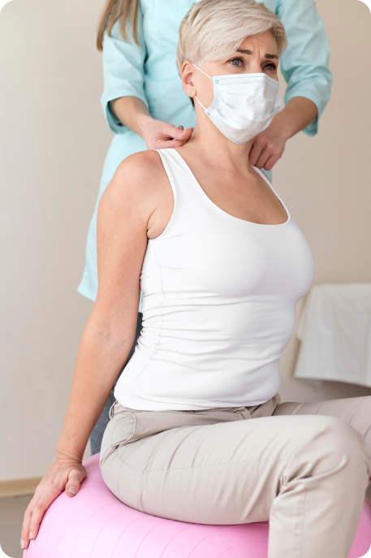
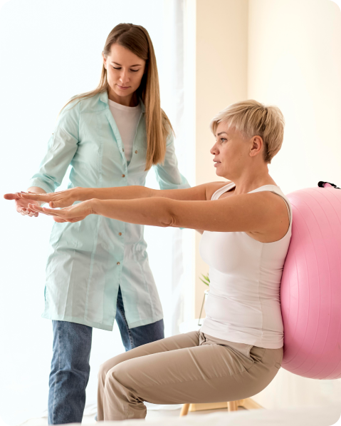
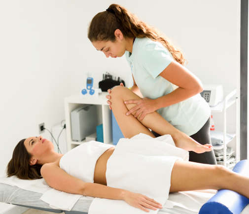
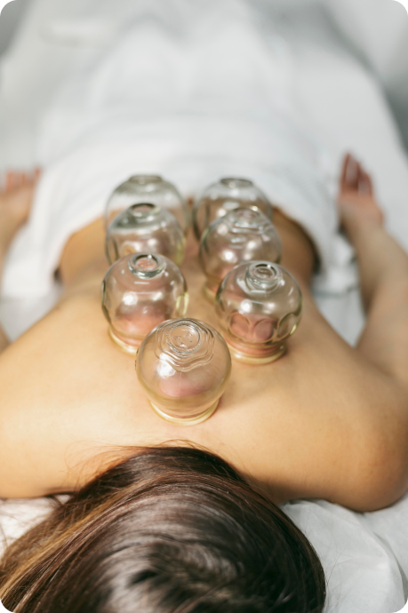
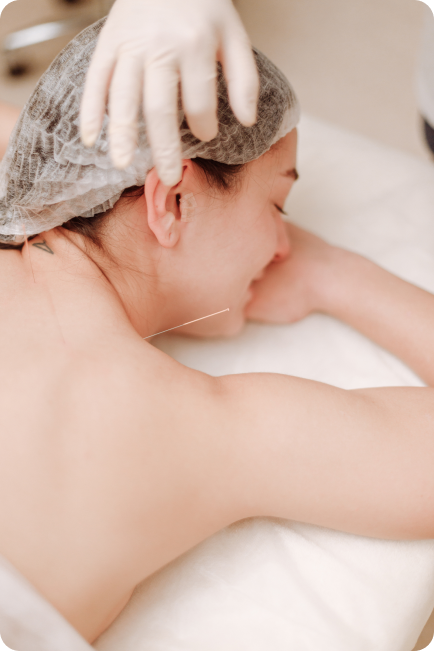
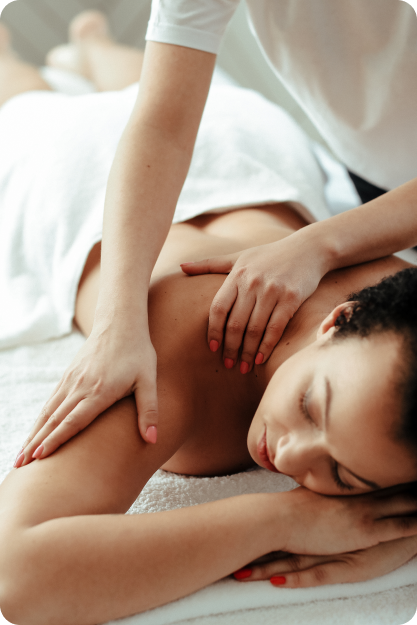

A fisioterapia motora é uma especialidade da fisioterapia focada na recuperação e reabilitação do movimento humano. Através de técnicas personalizadas, como exercícios terapêuticos, modalidades físicas e técnicas manuais, os fisioterapeutas buscam fortalecer os músculos, melhorar a mobilidade articular e promover a coordenação e equilíbrio. Essa abordagem é especialmente benéfica para pacientes com lesões, doenças neuromusculares ou distúrbios musculoesqueléticos, visando restaurar a funcionalidade e melhorar a qualidade de vida.
A fisioterapia motora é uma especialidade que visa recuperar e reabilitar o movimento humano. Com exercícios terapêuticos, técnicas manuais e modalidades físicas, os fisioterapeutas fortalecem os músculos, melhoram a mobilidade das articulações e promovem a coordenação. Essa abordagem é especialmente útil para pessoas com lesões, doenças neuromusculares ou distúrbios musculoesqueléticos, com o objetivo de restaurar a funcionalidade e aprimorar a qualidade de vida.
Fisioterapia Pós-COVID

A fisioterapia pós-COVID é uma abordagem especializada que visa ajudar os pacientes que se recuperaram da infecção pelo coronavírus a recuperar sua função física e qualidade de vida. Essa modalidade de fisioterapia é essencial devido aos efeitos duradouros que o COVID-19 pode ter no sistema respiratório, muscular e neurológico dos indivíduos afetados.
A fisioterapia pós-COVID utiliza uma variedade de técnicas e exercícios personalizados para fortalecer os músculos respiratórios, melhorar a capacidade pulmonar, aliviar a fadiga e restaurar a mobilidade física. Os fisioterapeutas especializados em pós-COVID desempenham um papel crucial no tratamento de pacientes que apresentam sintomas persistentes, como dispneia (falta de ar), fraqueza muscular, dor crônica e dificuldade de realizar atividades diárias. Com sua expertise, esses profissionais ajudam a promover a recuperação física e emocional dos pacientes, proporcionando uma abordagem holística e individualizada para cada pessoa afetada pela COVID-19.
Fisioterapia Respiratória
A fisioterapia respiratória é uma área especializada da fisioterapia que se concentra no tratamento e na reabilitação de distúrbios respiratórios. É uma abordagem terapêutica que visa melhorar a função pulmonar, promover a desobstrução das vias aéreas, otimizar a capacidade de respiração e auxiliar na remoção de secreções pulmonares.
Através de técnicas e exercícios específicos, a fisioterapia respiratória ajuda a expandir os pulmões, fortalecer os músculos respiratórios e melhorar a eficiência da troca gasosa. Os fisioterapeutas respiratórios trabalham em estreita colaboração com pacientes que sofrem de condições como asma, bronquite crônica, fibrose cística, doença pulmonar obstrutiva crônica (DPOC) e pós-operatório de cirurgias torácicas. Essa modalidade de fisioterapia desempenha um papel fundamental na promoção da saúde respiratória, proporcionando alívio dos sintomas, reduzindo as complicações respiratórias e melhorando a qualidade de vida dos pacientes afetados por doenças respiratórias.
Fisioterapia Preventiva

A fisioterapia preventiva é uma abordagem terapêutica que busca prevenir lesões, disfunções musculoesqueléticas e problemas de saúde por meio de intervenções fisioterapêuticas antes que eles se desenvolvam completamente. É um ramo da fisioterapia voltado para a promoção da saúde, prevenção de lesões e melhoria do bem-estar físico.
A fisioterapia preventiva envolve uma combinação de técnicas, exercícios e orientações personalizadas para cada indivíduo, visando melhorar a postura, fortalecer os músculos, aumentar a flexibilidade e prevenir o aparecimento de problemas musculoesqueléticos. Além disso, os fisioterapeutas preventivos fornecem orientações sobre ergonomia, técnicas de movimento adequadas e hábitos saudáveis, com o objetivo de evitar lesões relacionadas ao trabalho, esportes ou atividades diárias. Ao se concentrar na prevenção, a fisioterapia preventiva desempenha um papel importante na redução de riscos e na manutenção da saúde física, permitindo que as pessoas mantenham uma vida ativa e evitem problemas futuros.
Liberação Miofascial

A liberação miofascial é uma técnica terapêutica utilizada na fisioterapia para tratar disfunções musculoesqueléticas e aliviar dores musculares. Ela se concentra na manipulação do tecido conjuntivo, chamado de fáscia, que envolve os músculos, tendões e ligamentos do corpo.
Durante uma sessão de liberação miofascial, o fisioterapeuta aplica pressão manual ou utiliza ferramentas especiais para romper os pontos de tensão e aderências que se formam no tecido fascial. Isso ajuda a restaurar a elasticidade, melhorar a circulação sanguínea e promover a liberação de tensões musculares. A liberação miofascial é amplamente utilizada para tratar condições como dores crônicas, restrições de movimento, lesões esportivas e desequilíbrios posturais. Ao trabalhar diretamente nos tecidos fasciais, essa técnica terapêutica auxilia na melhoria da mobilidade, redução da dor e recuperação do corpo, permitindo que os pacientes voltem a suas atividades diárias com mais conforto e funcionalidade.
Ventosaterapia

A ventosaterapia é uma técnica terapêutica antiga que envolve a aplicação de copos de vidro ou de plástico na pele, criando um vácuo que suga a pele para dentro do copo. Essa sucção cria uma pressão negativa que estimula o fluxo sanguíneo local, promovendo a circulação e a liberação de tensões musculares.
Durante uma sessão de ventosaterapia, os copos são colocados em áreas específicas do corpo, criando uma pressão que pode ajudar a aliviar a dor, melhorar a circulação, reduzir a inflamação e promover o relaxamento muscular. Além disso, a ventosaterapia é frequentemente usada para tratar condições como dores nas costas, tensões musculares, problemas respiratórios e celulite. Essa técnica terapêutica proporciona uma abordagem não invasiva e complementar para o tratamento de diversos problemas de saúde, ajudando os pacientes a alcançarem alívio e bem-estar.
Auriculoterapia

A auriculoterapia é uma forma de terapia complementar que se baseia no estímulo de pontos específicos localizados na orelha para tratar diferentes condições de saúde. Esses pontos auriculares estão ligados a diferentes partes do corpo e órgãos, e acredita-se que ao estimulá-los, é possível promover o equilíbrio e a cura.
Durante uma sessão de auriculoterapia, pequenas agulhas, sementes de plantas ou esferas metálicas são aplicadas nos pontos auriculares correspondentes aos sintomas ou condições específicas do paciente. Esses estímulos podem ajudar a aliviar dores, reduzir o estresse, melhorar o sono e tratar uma variedade de condições, incluindo enxaquecas, ansiedade, problemas digestivos e dores crônicas. A auriculoterapia oferece uma abordagem não invasiva e holística, estimulando o corpo a se autocurar e restaurar o equilíbrio energético, visando a promoção da saúde e do bem-estar geral.
Massagem Relaxante

A massagem relaxante é uma técnica terapêutica que utiliza movimentos suaves, rítmicos e firmes para promover o relaxamento físico e mental. Ela é realizada através da aplicação de pressão nas camadas superficiais dos músculos, aliviando a tensão muscular, reduzindo o estresse e proporcionando uma sensação geral de bem-estar.
Durante uma sessão de massagem relaxante, óleos essenciais podem ser utilizados para potencializar os efeitos relaxantes. Os movimentos são aplicados de maneira lenta e fluída, promovendo a circulação sanguínea, aumentando a oxigenação dos tecidos e ajudando a liberar toxinas acumuladas no corpo. Essa técnica terapêutica é ideal para aliviar o estresse do dia a dia, reduzir dores musculares, melhorar a qualidade do sono e promover o equilíbrio emocional. A massagem relaxante proporciona um momento de descanso e renovação, estimulando o relaxamento profundo e a restauração da vitalidade física e mental.